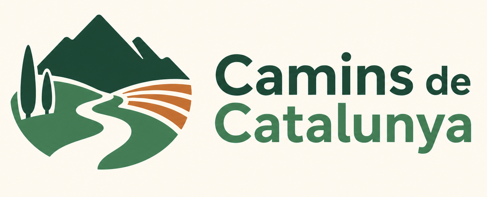

Per què contactar amb nosaltres?
Oferim informació actualitzada sobre les rutes de senderisme.
Les nostres guies estan revisades periòdicament perquè puguis gaudir de la natura amb seguretat.

Oferim informació actualitzada sobre les rutes de senderisme.
Les nostres guies estan revisades periòdicament perquè puguis gaudir de la natura amb seguretat.
"La natura no és un lloc per visitar, és casa nostra."
Com deia Gary Snyder.
Les rutes són gratuïtes i es poden consultar durant tot l'any.
| Dia | Horari |
|---|---|
| Dilluns - Divendres | 09:00 - 18:00 |
| Dissabte | 09:00 - 13:00 |